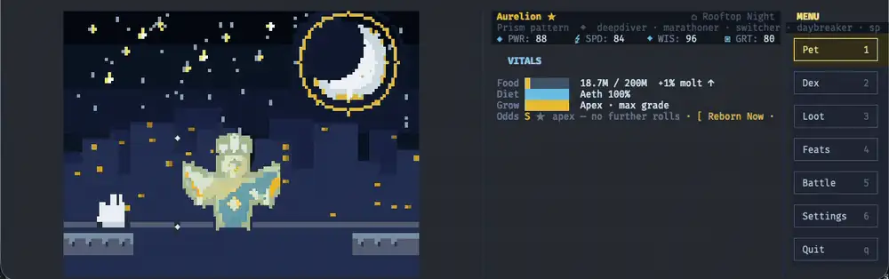
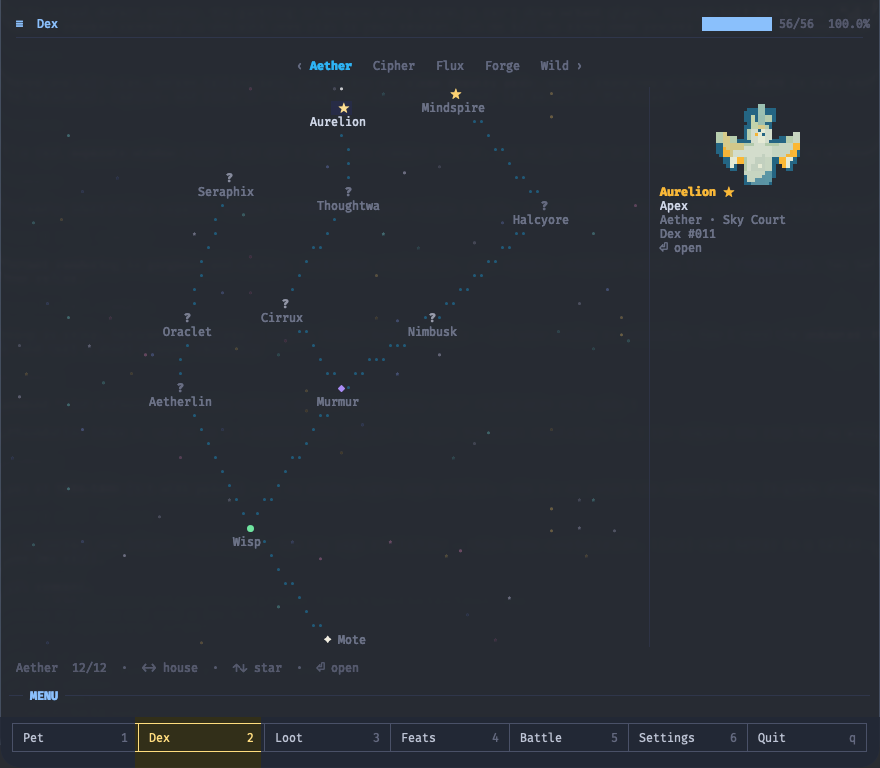
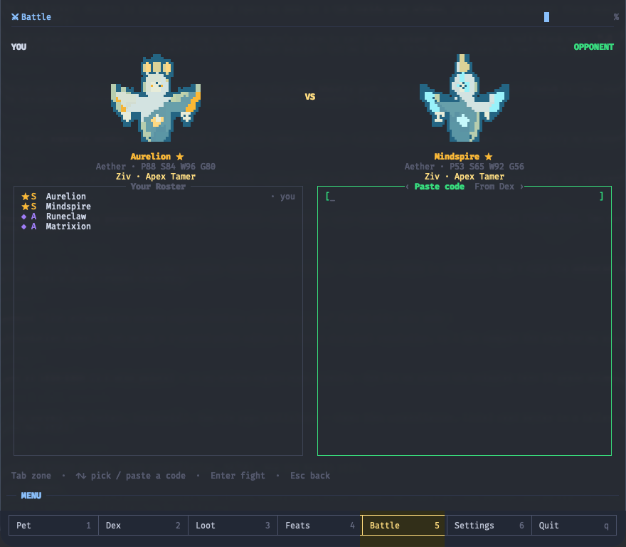
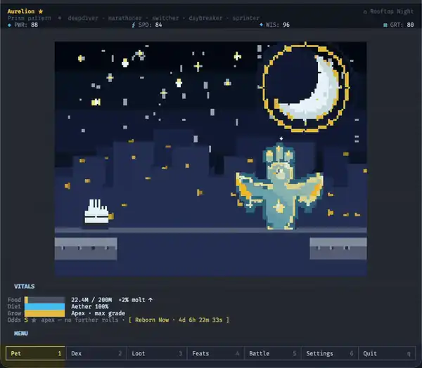

curl -fsSL https://github.com/zivkong/token-tamers/releases/latest/download/install.sh
| sh
No Node, no sudo, no signup. Works over SSH. macOS · Linux · Windows.
It reads your logs, never spends your tokens
A whole Dex worth completing
Your coding rhythm shapes the creature: five Houses, six stages, grades C through S. Every species you raise lights up its star in a per-House constellation. The collection is the long game.

Battle by pasting a DNA code
Every pet exports to a shareable DNA code. Drop a friend's code into the terminal and fight, deterministically, with a House type-wheel and trait procs. No server, no accounts, no network.

Loot, Feats and a living shell
Unlock habitats and trinkets, equip your pet's home, and chase 60 Feats toward 100%. It all lives in a clickable tt shell that runs at 30 fps on under 2% CPU.

The three pledges
- Read-only. Never calls an AI API, never spends your tokens or quota. It only reads the local logs your agent already writes.
- Zero network. No network code, enforced by CI. The lone exception is an opt-in, off-by-default updater that fetches releases from GitHub and sends nothing.
-
Fully local. Your data stays in
~/.tokentamers. Social features work entirely by pasting DNA codes, no server.